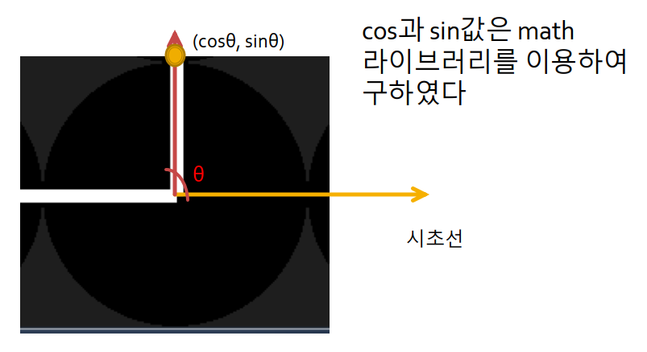

Kinetic Wall Clock
사용한 모듈: pygame, math, time, detetime
코드: (Code Link)
동아리 시간에 개인프로젝트로 제출한 프로그램이다.
Kinetic wall Clock은 여러개의 시계와 바늘이 일정한 패턴을 그리며 움직이다가 바늘들이 현재 시간에 따라 자신의 자리를 찾아서 위치해 시간을 표시해주는 시계이다.
선을 그릴 때 각도에 따라 시계바늘을 움직이려면 각도에 따른 원의 테두리 좌표를 구해야 했다. 이때 사용한 것이 삼각함수이다.

그 후 여러 개의 시계를 만들고 패턴에 따라 각자의 시계 바늘이 이루어야 할 각을 부여 받도록 하였다.
각자의 시계 바늘은 부여 받은 각이 될 때까지 시계방향으로 돌아간다.(현재 시간은 time과 detetime라이브러리를 사용하여 구하였다.)

느낀점: 처음에 이 프로젝트를 시작할 때 좌표를 구하고 여러개의 시계들을 제어하는 것에서 약간의 어려움이 있었지만
좌표를 구하는 것은 삼각함수의 활용을 통해 수학적으로 극복할 수 있었고, 여러개의 시계를 제어하는 것은 클래스의 사용으로
극복할 수 있었다.
이를 통해 수학의 중요성과 끈기의 중요성을 다시 한번 느꼈으며, 클래스의 사용에 조금은 익숙해 질 수 있었다.
a
a